Kevin Chu · Fall 2026
Fun with Filters and Frequencies
I used convolution to find edges, sharpen details, build hybrid images, and blend photos at different scales. The output looks different in each part, but the same filtering idea runs through the whole project.
Convolutions from scratch
The four-loop version follows the definition of convolution. For every output pixel, I multiply each filter value by the image pixel underneath and add the products. One important step is flipping the filter horizontally and vertically first. Without that flip, the operation is cross-correlation.
I then rewrote it with two loops. The outer loops still move across the image, but NumPy multiplies and sums the entire patch at once. Padding was the part that took me the most time to reason through because pixels near the edge do not have a complete neighborhood. I used zeros outside the image: same returns the original size, while full keeps every partial overlap and produces a larger result.
On a 50 × 50 crop with a 9 × 9 box filter, a single timing run took 0.0622 seconds with four loops, 0.0068 seconds with two loops, and 0.0003 seconds with scipy.signal.convolve2d. These are example timings, not averages. Both of my versions matched SciPy with np.allclose. NumPy speeds up the patch calculation, while SciPy is faster still because its inner work is compiled.
Padding and output size
This setup is shared by both versions. For same, the total padding on each axis is one less than the filter size. An even-sized filter puts the extra pixel on the top or left. For full, I pad by one less than the filter size on each side.
flipped_filter = np.flip(np.flip(filter, axis=0), axis=1)
fh, fw = flipped_filter.shape
if mode == 'same':
pad_top = fh // 2
pad_bottom = (fh - 1) // 2
pad_left = fw // 2
pad_right = (fw - 1) // 2
elif mode == 'full':
pad_top = pad_bottom = fh - 1
pad_left = pad_right = fw - 1
padded = np.pad(
image, ((pad_top, pad_bottom), (pad_left, pad_right)),
mode='constant'
)
output_h = padded.shape[0] - (fh - 1)
output_w = padded.shape[1] - (fw - 1)
output = np.zeros((output_h, output_w))Four-loop version
for i in range(output_h):
for j in range(output_w):
for fi in range(fh):
for fj in range(fw):
output[i, j] += (
padded[i + fi, j + fj]
* flipped_filter[fi, fj]
)Two-loop version
for i in range(output_h):
for j in range(output_w):
patch = padded[i:i+fh, j:j+fw]
output[i, j] = np.sum(
patch * flipped_filter
)I tested the implementation on my own grayscale image. The normalized 9 × 9 box filter replaces each pixel with a local average, so the result becomes blurred. The finite-difference filters instead respond to sudden brightness changes: Dx emphasizes vertical edges and Dy emphasizes horizontal edges.
box_filter = np.ones((9, 9)) / 81
Dx = np.array([[1, 0, -1]])
Dy = np.array([[1], [0], [-1]])

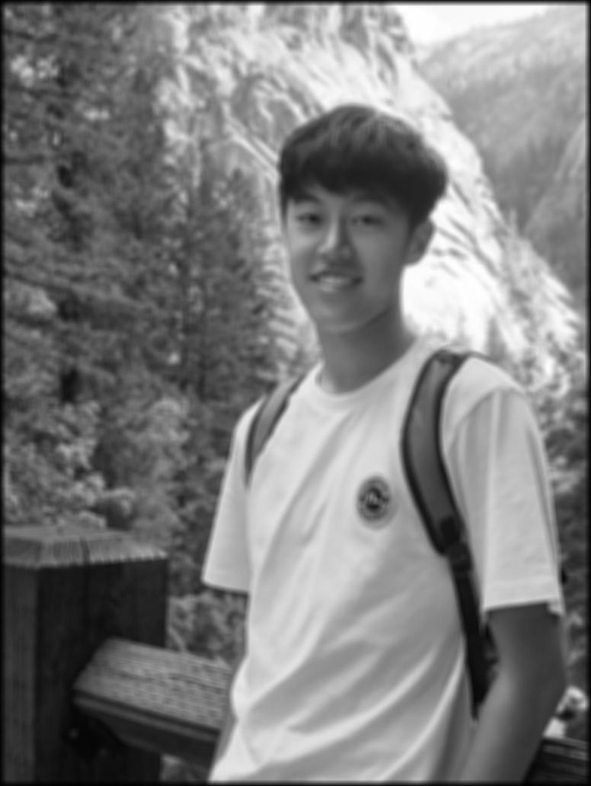


The original photo is the reference. A 9 × 9 average smooths it in same or full mode, while Dx and Dy separate vertical and horizontal changes.
Finite difference operator
The cameraman is the test image for edges. I cropped the white frame that came with the source image so it would not turn into a false rectangular edge. Then I convolved the image with the same Dx and Dy operators from 1.1. A large response means brightness jumps in that direction.

Partial derivatives
Dx lights up vertical structure (coat, tripod legs). Dy lights up horizontal structure (hat brim, camera body). Mid-gray is near zero. Brighter and darker pixels are positive and negative slopes after I stretched each result to [0, 1] for display.


Gradient magnitude
Neither map has every edge, so I combined them with √(Dx² + Dy²). Bright pixels change quickly in some direction. This is still a grayscale strength map, not a yes/no edge image yet. Grass texture is already visible as speckle.

Binarizing: two rejects, then the chosen cut
I divided the magnitude by its max, then kept pixels above a threshold. The goal is to keep the main cameraman and tripod edges while removing most of the grass texture. 0.10 leaves too much noise, while 0.50 cuts away important structure.


Derivative of Gaussian
The 1.2 edge map is noisy because Dx and Dy respond to every small brightness change in the grass. A Gaussian blur first removes that high-frequency texture. I built a 9 × 9 kernel with cv2.getGaussianKernel (σ = 2) and its outer product, then tried two equivalent pipelines.
Method 1: blur the image, then take derivatives
Convolve with G, then with Dx and Dy, then form the same magnitude and 0.28 threshold as in 1.2. The blur is the only new ingredient.


What changed versus finite differences
Here is the 1.2 edge map next to the blurred-then-differentiated map. Same 0.28 relative threshold. Grass speckle drops out. The remaining edges get thicker, because the blur spreads each brightness jump over more pixels. The coat and tripod stay. Some weak background edges disappear with the grass.
Method 2: fuse the filters, then convolve once
Convolution is associative, so blur-then-Dx is the same as convolving the image with (G ∗ Dx). I convolved the Gaussian with Dx and with Dy to get two derivative-of-Gaussian filters, then applied each once to the original cameraman. Both methods use the same symmetric padding and crop only at the end. Cropping the intermediate blur would change the border pixels. These kernels are enlarged by the same amount. G has only positive values and is divided by its maximum for display. Each signed DoG filter is mapped from its own minimum to maximum, placing zero near mid-gray. Brightness is not a common numerical scale across these three panels.


These match method 1. The two binarized images differ in zero pixels, so one combined filter replaces blur-then-Dx and blur-then-Dy.
Image sharpening
For unsharp masking, I blur the image and subtract that blurred copy from the original. The difference contains mostly edges and fine texture because the blur kept the low frequencies. I then add a scaled version of that detail back: sharp = image + α(image − blur).
I combined those steps into the single unsharp-mask filter (1 + α)I − αG. Increasing α makes the Taj's windows and outlines more distinct, but α = 3 also creates obvious halos and harsh contrast. α = 1.5 gave the best balance here. Blurring and then sharpening again restores some edge contrast, but it cannot recover fine information that was already averaged away.


Changing how much detail I add back
The same unsharp-mask filter, three values of α. Larger α puts more of that high-frequency layer back.


Dome detail at two sharpening strengths
The same 152 × 135 crop from the original Taj image appears in each panel. The 9 × 9 Gaussian has σ = 2, so only α changes. This makes the dome edge and any sharpening halo easier to compare than in the full image.
This fixed crop isolates the dome. With σ = 2 held constant, raising α from 1.5 to 3 amplifies edge contrast and halos.
Blur a sharp photo, then try to sharpen it back
I started from the original Taj, blurred it with the same Gaussian, then ran unsharp masking (α = 1.5). Contrast on the big edges comes back a little. The fine carving that the blur averaged away does not.

Second example: a soft photo of the full Moon
This full-Moon photo is slightly soft, which makes it a good test for unsharp masking. I used the same 9 × 9 Gaussian with σ = 2. The high-frequency layer is almost entirely crater rims and the bright ray streaks around young craters. Adding it back at α = 1.5 makes the maria edges and small craters much crisper without changing the overall shading of the disc.


The same 340 × 340 crop of the lunar surface in each panel. At α = 1.5 the small craters and ray streaks become distinct. At α = 3 the filter starts amplifying JPEG noise and grain, so the surface looks gritty rather than more detailed.


Hybrid images
Hybrid images were the most fun part of the project, but also much more finicky than I expected. Up close, sharp edges and small details grab my attention. When I shrink the image or step away, those details disappear and I mostly see the broad low-frequency structure.
The code itself is short: high-pass one image, low-pass the other, and add them. Getting a convincing result is the hard part. I tried pairs with matching shapes and checked each result at a much smaller size. If the silhouettes fight each other, changing the cutoff cannot really fix it.
| Hybrid | Alignment | High σ | Low σ | High weight | Close → far |
|---|---|---|---|---|---|
| Nutmeg × Derek | Eye landmarks, then crop | 3 | 8 | 1.0 | Cat details → Derek face |
| Owl × Moon | Matching circular crops | 2 | 6 | 0.7 | Owl face → lunar disc |
| Wheel × Sunflower | Centered circular crops | 2 | 10 | 0.65 | Wheel spokes → sunflower |
Nutmeg × Derek
I aligned their eyes and put Nutmeg in the high-frequency layer over a low-pass Derek. I used σ = 3 for Nutmeg and σ = 8 for Derek, then cropped away the empty corners from alignment. Up close, Nutmeg's eyes, nose, and whiskers show through. At a smaller size, Derek is easier to recognize.


Owl × Moon
I wanted the owl's face to fit inside the Moon's round disc. I cropped both around that circle, then used σ = 2 for the owl's high-pass and σ = 6 for the Moon's low-pass. My first try used σ = 10 for the Moon, but that blurred away the dark maria and left a plain gray blob that did not read as the Moon from far away. σ = 6 keeps the maria. Outside the lunar disc, I replaced the owl with its own blur, so its high-pass is close to zero there and no feathers spill into the black sky. I weighted the owl layer at 0.7 so its feathers do not overpower the Moon at a small size.


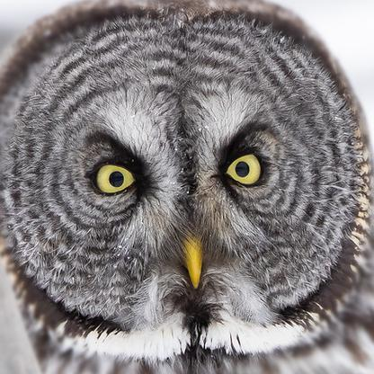
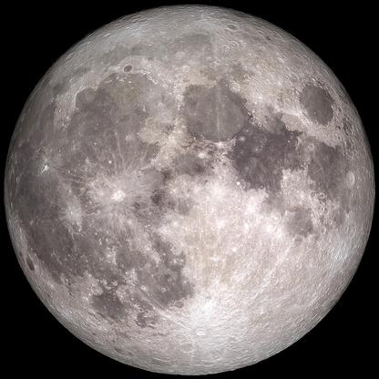
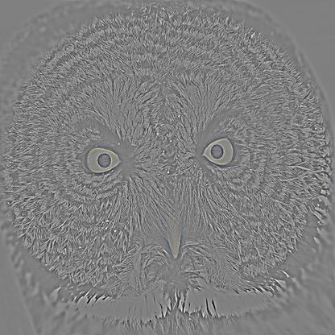
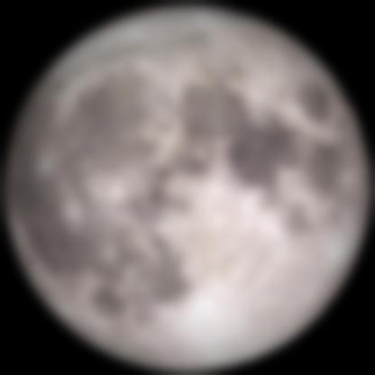

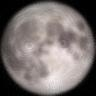
Log-magnitude Fourier spectra of Owl × Moon
Each panel shows log(1 + |F|), divided by its own maximum for display. Brightness across separate panels is therefore not a shared energy scale. A bright center indicates slow, large-scale structure. Energy farther out indicates small details. Cutoffs were σ = 2 on the owl (high-pass) and σ = 6 on the Moon (low-pass). I picked those by shrinking the hybrid until the disc read as a moon without the owl face taking over.
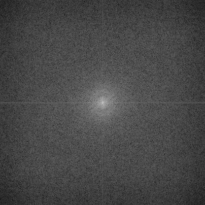
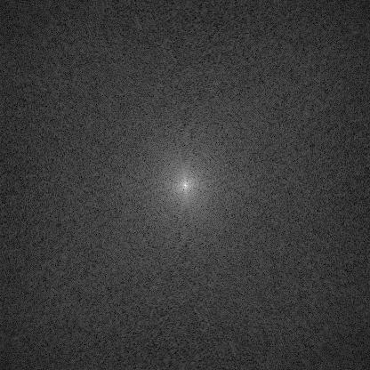
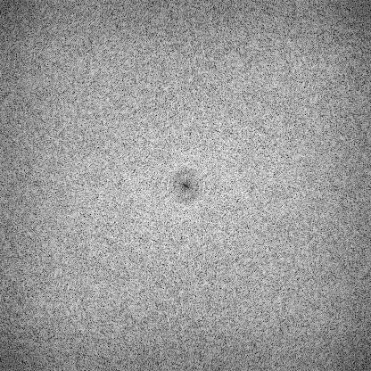
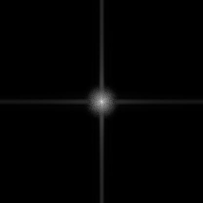
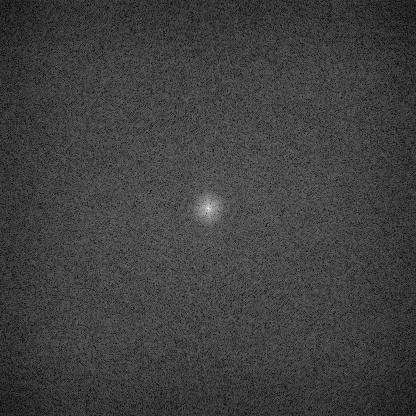
The Moon's low-pass spectrum is concentrated near the bright center, where low frequencies live. The owl's high-pass spectrum loses much of that center and keeps energy farther outward. The final spectrum contains both.
Ferris wheel × Sunflower
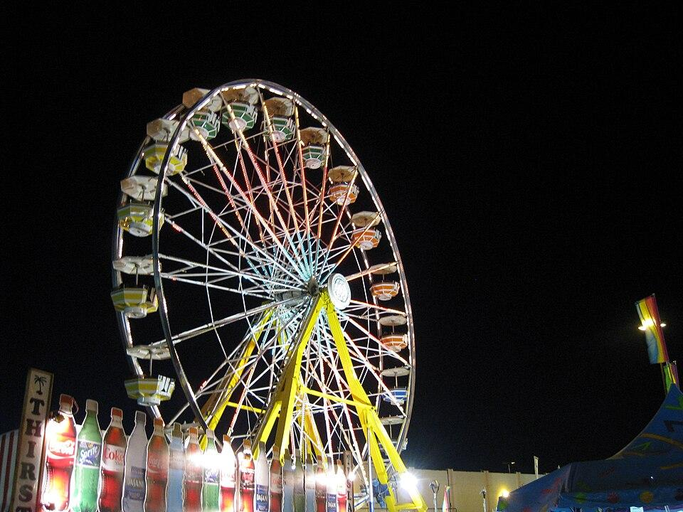
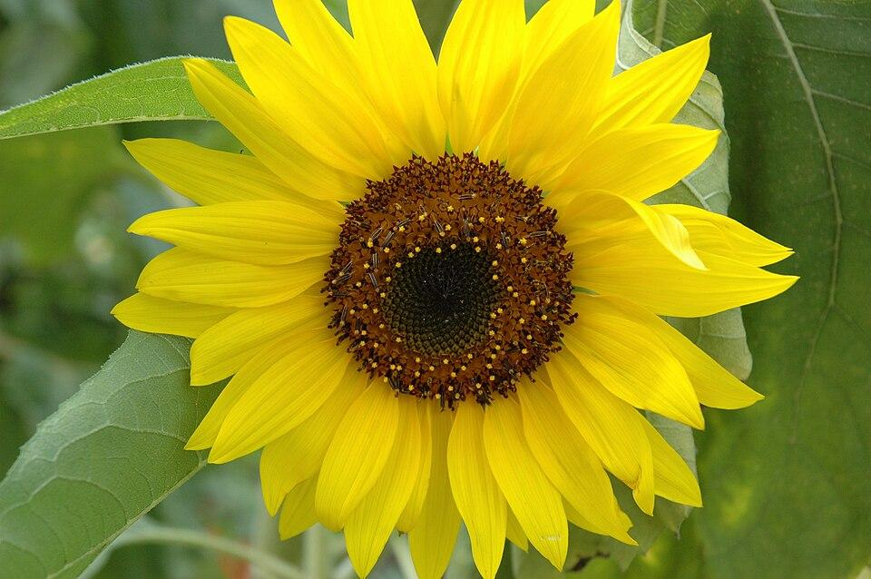
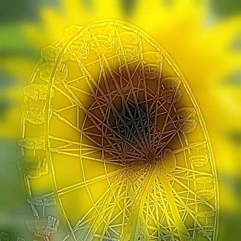
The wheel's spokes are strong up close, but the round sunflower and its yellow petals take over in the 96 × 96 view. I used 0.65 of the wheel's high-frequency layer so it would not drown out the flower.
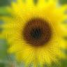
A failed expression experiment
I also tried to make a face change expression with viewing distance, with a frown in the high-frequency input and a smile in the low-frequency input. This one did not switch clearly. The two faces have nearly the same broad structure, while the differences around the eyes and mouth are too subtle to give the small view a distinct smile. I kept the failure here because it shows why simply aligning two related photos is not enough.

Gaussian and Laplacian stacks
Gaussian and Laplacian stacks sort an image by feature size. One blur separates only “low” and “high” frequencies, but blending needs more than two bands. I built a Gaussian stack by repeatedly blurring while doubling σ at each level. Unlike a pyramid, a stack never downsamples, so every level remains the original dimensions.
I formed each Laplacian level by subtracting adjacent Gaussian levels. The early levels contain small edges and texture, while later levels contain broader shapes and color changes. I keep the final Gaussian image as the lowest-frequency residual. These bands do not lose information: summing all six Laplacian levels reconstructs the original image.
Apple Gaussian stack
These six full-size levels show increasing blur. Each new level uses twice the previous σ, so small details disappear first and the broad apple shape remains.


Apple Laplacian stack
Subtract adjacent Gaussian levels to isolate fine-to-coarse bands. The last panel is the remaining low-frequency image rather than another difference.


Orange Gaussian stack
The same six blur levels on the orange let me compare its changing structure with the apple without resizing either image.


Orange Laplacian stack
The orange differences are also ordered from texture to broad color. Adding all six levels recovers the original orange.


Multiresolution blending
A normal cut gives me an obvious seam, but simply making the seam very blurry is not a great fix either. If the transition is narrow, large color regions still look disconnected. If it is wide, small details from both images overlap and start to look ghosted. I ran into both problems while testing the blends.
Multiresolution blending gives each frequency band its own transition width. I built Laplacian stacks for both images and a Gaussian stack for the mask. At every level I used L blend = G mask · L A + (1 − G mask) · L B, then summed the blended levels. High-frequency details change sides relatively quickly, while low-frequency lighting and color change over a wider area. This is what lets the apple and orange meet without one fixed blurry strip across every feature.


Figure 3.42 recreation
Each row is one role in the blend. Columns go from fine texture (L0) to the leftover low-frequency image (L5). I skipped L1 and L3 so the 12 panels match Szeliski’s (a)–(l) layout: four levels × three rows.
Fine → coarse
(a,e,i) L0
(b,f,j) L2
(c,g,k) L4
(d,h,l) L5
Masked Apple


Masked Orange


Sum


High-frequency columns switch from apple to orange over a short distance. The L5 column changes color over a much wider strip. That is the whole point of blending per band.
Custom blends
I made two blends beyond the oraple. Crystal Lake uses a vertical seam on a pair of seasonal lake photos. Galaxy Eye uses an iris-shaped mask instead of a line.
Summer to winter at Crystal Lake
These were taken at the same Colorado lake. I moved the winter photo up by 24 pixels to bring the far shoreline closer to the summer one. I also softened the vertical mask with a Gaussian of σ = 60 pixels before making its stack. The hard cut stops the water reflection abruptly. The stack result has a gentler transition, although the sky and lake still make the change of season obvious.


Galaxy Eye: an irregular iris mask
The arms of the spiral galaxy NGC 3147 look a lot like the radial fibers of an iris, so I blended the galaxy into the iris of a close-up eye. I scaled the galaxy by 0.6 so its core sits on the pupil and its arms fill the iris. The mask is not a line or a plain circle. It is the iris disc, cut off by the curve of the upper eyelid, with the pupil and the window catchlight removed, so the eye keeps its real pupil, reflection, and lashes.
One thing went wrong on the first try: the galaxy's bright core sits right under the pupil, and the coarse mask levels are wide enough that it leaked in and turned the pupil a washed-out brown. Before building the stacks, I copied the eye's real pupil and catchlight into the galaxy input, so both images agree there and nothing can bleed in.
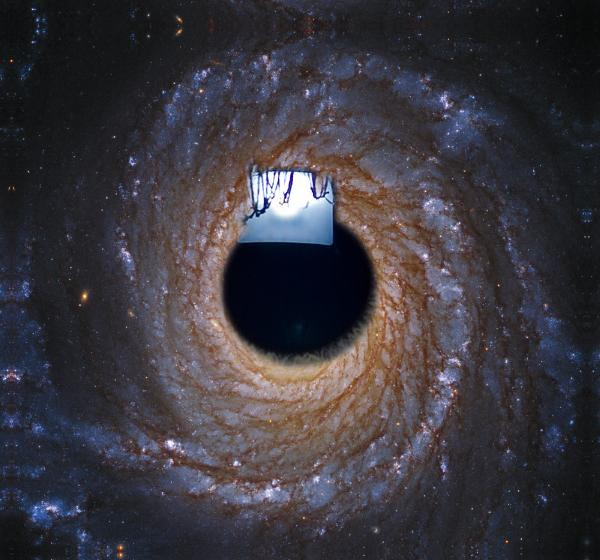


At full size the two look similar, so here is the same 260 × 260 crop of the eyelid and the left edge of the iris.
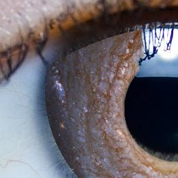
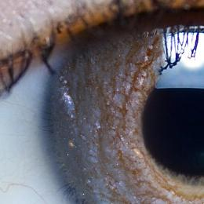
In the hard cut, the galaxy is pasted on top of the eye. In the stack blend, the eye's broad shading (the eyelid shadow and the dark ring at the iris edge) comes from the coarse levels, while the galaxy supplies the fine texture. That is why it reads as an iris instead of a sticker.
These are the two inputs after applying the unblurred mask. They show what each photo contributes before the band-by-band combination, like Burt and Adelson's Figure 10.
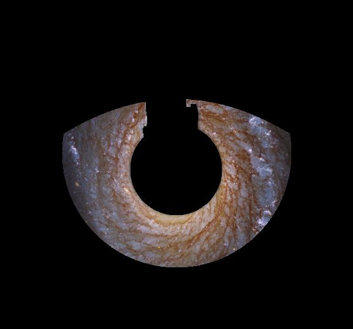
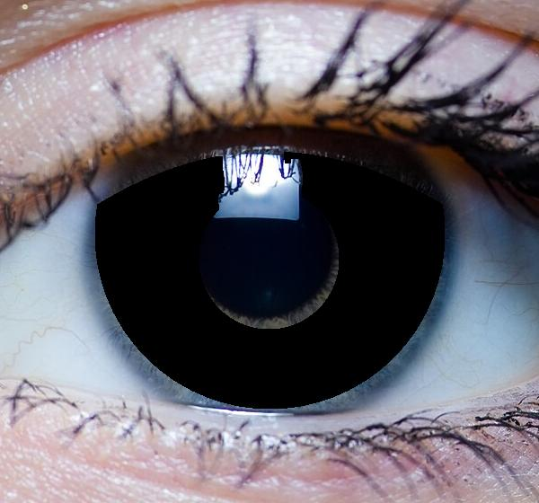
Inside the Galaxy Eye blend
Same fine-to-coarse layout as Figure 3.42. In the galaxy row, fine bands stay inside the iris while L5 spreads well past it. In the sum row, L0 carries the star-like detail and the lashes, and L5 carries the brown core glow and the blue sclera.
Fine → coarse
L0
L2
L4
L5
Masked Galaxy


Masked Eye


Sum


Most important thing I learned
The most useful lesson was that filtering and image choice have to work together. The owl and Moon share a round shape, so their edges line up well enough for the hybrid to read at two distances. The Crystal Lake photos share a shoreline, which gives the summer-to-winter blend a place to meet. I could change filter widths and weights, but I still had to check the images at the size where someone would actually see them.